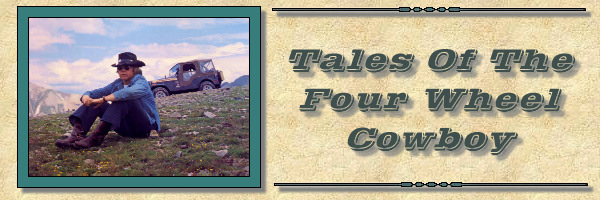
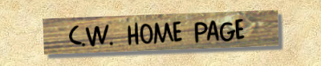

|
She was born, in the brief mountain springtime
Blue in the late mountain snow And she grew in the sunlight of summer But she knew when the aspen turned gold That she had grown old Columbine, columbine, blue in the Rockies Well I missed you, while you were away Will I see you next summer, wild on the mountain? Will you be there when I pass your way? She was there in the brief mountain springtime Blue in the late mountain snow And we lived in the sunlight of summer But I knew when the aspen turned gold That I had grown old Columbine, columbine, blue in the Rockies Well I missed you, while you were away Will I see you next summer, wild on the mountain? Will you be there when I pass your way? {Piano Interlude} Columbine, columbine, blue in the Rockies Well you miss me, when I've gone away Will I see you next summer, wild on the mountain? Will you be there when I pass your way? Columbine, columbine, blue in the Rockies Well you miss me, when I've gone away |
